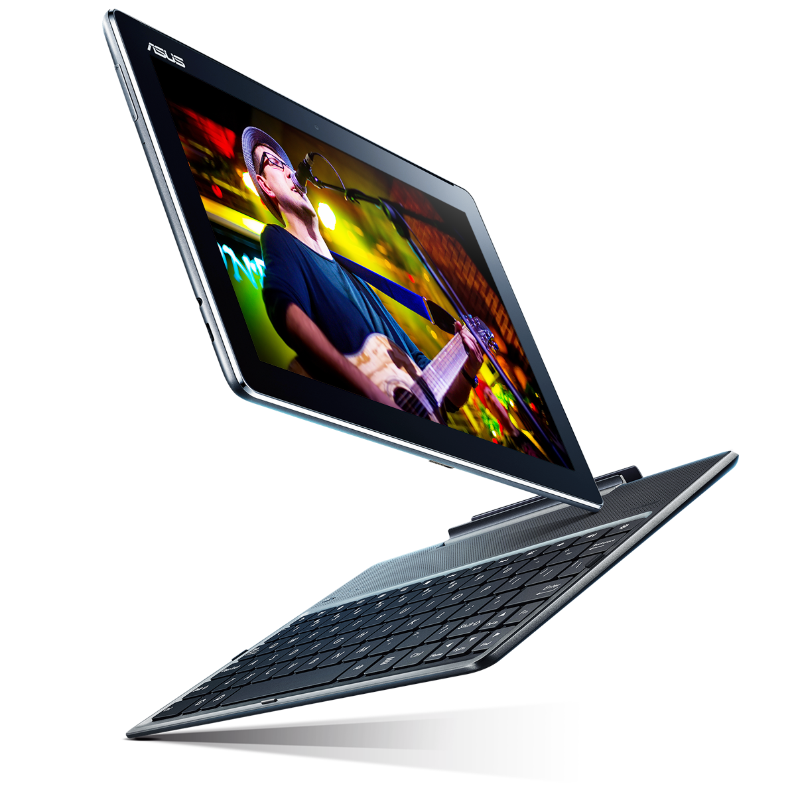

ASUS ZenPad
Redefining Luxury
Interchangeable Tablet with Incredible Entertainment Experiences
Watch Video
Interchangeable Tablet with Incredible Entertainment Experiences
Watch VideoASUS ZenPad features an alluring look and feel inspired by the ASUS Zen design philosophy of crafting harmonious beauty and functionality.
With its clean lines, unique design, and elegant leather patterning, ASUS ZenPad has refined, luxurious styling that fits any setting. A polished metallic band frames the edge, adding a bold visual accent.
* Measured from lower edge of two-layer seam on device rear to the screen.
SCREEN-TO-BODY
RATIO
THIN
ELEGANT LEATHER PATTERN

Comprehensive Visual Optimization
ASUS VisualMaster is a suite of exclusive visual enhancement technologies that combine hardware and software to optimize all aspects of the display — including contrast, sharpness, color, clarity, and brightness — resulting in an incredibly realistic viewing experience. With ASUS VisualMaster, it's just like being there.
Learn moreCONTRAST
150%WIDER CONTRAST
LEVELS
The World's First Tablet with Interchangeable Functional Cases
ASUS ZenPad features an innovative interchangeable design that lets you easily customize your tablet with functional docking and covers that provide extra features and additional color options, while perfectly matching ZenPad's look.
The World's First Tablet with Interchangeable Functional Cases
ASUS ZenPad features an innovative interchangeable design that lets you easily customize your tablet with functional docking and covers that provide extra features and additional color options, while perfectly matching ZenPad's look.
ASUS Zen Clutch is a fashion-forward cover that combines elegant styling with premium materials to provide a sophisticated carrying and protection solution for ASUS ZenPad. Featuring a fine leather finish available in three vibrant colors that perfectly match ZenPad, ASUS Zen Clutch has a luxurious look and feel to express your sense of style. Its unique folding design doubles as a convenient stand for typing or watching videos.
Boost Your Productivity and Entertainment
ASUS Audio Dock combines Bluetooth stereo speakers with a comfortable keyboard to provide enhanced entertainment and productivity for ASUS ZenPad 10. It features dual, front-facing speakers with ASUS SonicMaster technology to deliver rich, full-sounding audio, a connection range of up to 10 meters, and a stylish design with a premium leather texture that is both elegant and soft to the touch.
ZenPad’s 2MP PixelMaster camera captures incredible photos. With this special wide-angle mode and ZenPad ’s f/2.4-aperture lens and 75-degree field of view you’ll capture more of your happy times, with panoramic selfies of up to 140 degrees.
Freedom, connection, and expression form the foundation for ASUS's ZenUI mobile user interface. The brand-new ZenUI with exquisite visual design has a variety of new features, including ZenMotion and ZenUI Instant Updates that enhance usability and deliver a seamless user experience.

A Protective Cover and Stand for Your ZenPad 10
ASUS ZenPad 10 TriCover provides comprehensive and stylish protection for ASUS ZenPad, and is available in a choice of three vibrant colors with exquisite textured finishes for expressing your personal style. Just 1.2 mm at its thinnest point, TriCover is thin and lightweight, and doubles as a convenient stand for watching videos and typing.
Intuitive Writing and Drawing to Express Your Creativity
Z Stylus is designed especially for ZenPad to provide a natural writing and drawing experience that's as easy as using a pen. With pinpoint accuracy and sensitive multi-touch technology, Z Stylus is perfectly suited for creative tasks such as sketching, painting, and even design work.
WRITING TIP
PRESSURE LEVELS SENSITIVE